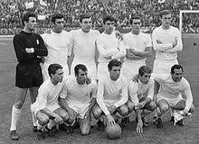
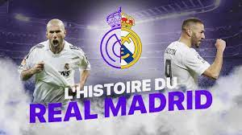
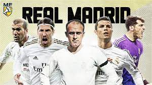
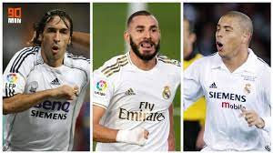
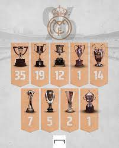
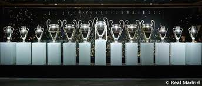
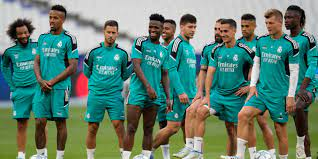
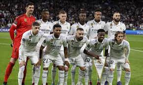

Histoire
Le Real Madrid est l'un des clubs de football les plus emblématiques au monde, avec une histoire riche et glorieuse. Fondé en 1902 à Madrid, en Espagne, le club a connu de nombreux succès et est devenu une référence du football mondial. Au fil des décennies, le Real Madrid a remporté de nombreux titres nationaux et internationaux, établissant une tradition de jeu spectaculaire et offensif. Des joueurs légendaires ont marqué l'histoire du club, tels que Alfredo Di Stéfano, Ferenc Puskás, Cristiano Ronaldo et bien d'autres. Le Real Madrid est connu pour son maillot blanc emblématique et sa philosophie de jeu ambitieuse. Il reste un symbole de passion, de fierté et d'excellence, et continue d'inspirer les fans du monde entier.
 Meilleurs Joueurs
Le Real Madrid a été le foyer de certains des meilleurs joueurs de l'histoire du football. Des légendes du jeu ont arboré le maillot blanc et ont laissé une empreinte indélébile dans les mémoires des fans. Des noms tels que Alfredo Di Stéfano, Ferenc Puskás, Zinedine Zidane, Cristiano Ronaldo et bien d'autres ont illuminé les terrains du monde entier sous les couleurs du Real Madrid. Ces joueurs exceptionnels ont non seulement remporté des trophées, mais ont également enchanté les foules avec leurs compétences, leur flair et leur talent inégalé. Ils ont élevé le niveau du jeu, défini de nouveaux records et ont été des piliers dans les moments clés du club. Leur héritage continue d'inspirer les générations actuelles et futures, et leur nom reste étroitement lié à l'histoire glorieuse du Real Madrid. Ces joueurs sont devenus des icônes et des symboles de l'excellence, laissant un héritage indélébile dans le monde du football.
 Palmarès
Le palmarès du Real Madrid est tout simplement impressionnant. Le club a dominé le football espagnol et international avec une incroyable série de victoires. Avec 34 championnats de La Liga, le Real Madrid est le club le plus titré de l'histoire de la compétition. Il a également remporté la prestigieuse Ligue des champions de l'UEFA à 13 reprises, consolidant ainsi sa position de club le plus titré dans cette compétition. Le Real Madrid a également remporté à quatre reprises la Coupe du monde des clubs de la FIFA, témoignant de sa suprématie sur la scène mondiale. Ces succès ont été rendus possibles grâce à la qualité exceptionnelle des joueurs qui ont porté le maillot madrilène au fil des années, ainsi qu'à la passion et au dévouement du club et de ses supporters. Le palmarès du Real Madrid est un véritable témoignage de son histoire glorieuse et de sa volonté incessante de se surpasser sur tous les terrains.
 Actualité
L'actualité du Real Madrid est toujours un sujet brûlant pour les passionnés de football. Le club est constamment au cœur des discussions, que ce soit pour ses performances sur le terrain, ses transferts, ses rivalités ou ses ambitions. Les fans avides de nouvelles suivent de près les dernières informations concernant les matchs à venir, les résultats, les performances individuelles des joueurs et les tactiques de l'entraîneur. Les médias couvrent chaque détail, des rumeurs de transferts aux conférences de presse, permettant aux supporters de rester connectés à leur équipe favorite. L'actualité du Real Madrid est également marquée par les rivalités intenses avec d'autres clubs et les compétitions auxquelles il participe, que ce soit en championnat national, en Ligue des champions de l'UEFA ou en coupe nationale. Chaque match est un moment d'excitation et d'anticipation pour les fans, qui espèrent voir leur équipe préférée briller sur le terrain. L'actualité du Real Madrid est un sujet animé qui continue d'alimenter les débats et de susciter l'enthousiasme chez les passionnés du ballon rond.
 